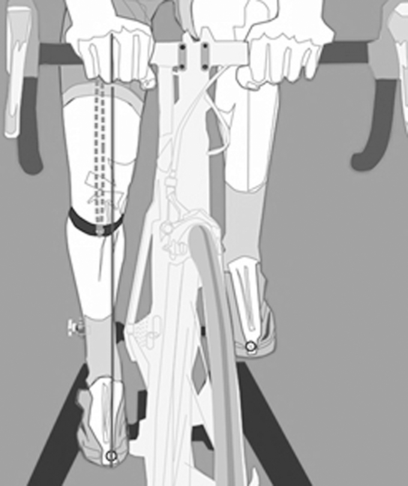
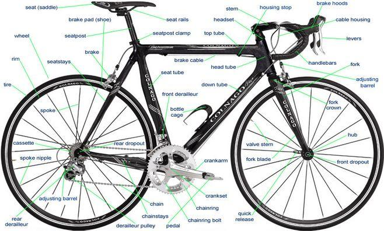
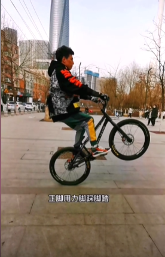
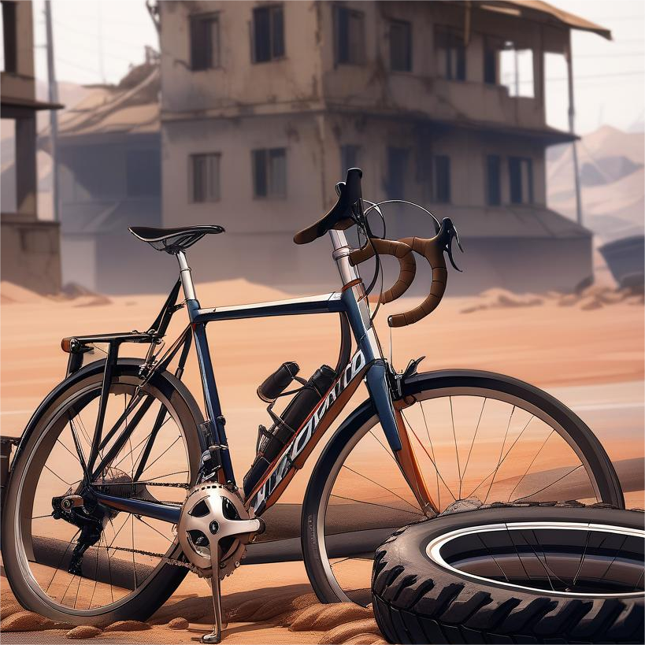

知识和技巧






山地车翘头，又称为“wheelie”或“后轮抬起”，是一种山地自行车技巧，通过特定的骑行动作使前轮离地，后轮支撑车身前进。这项技巧不仅考验骑手的平衡感，还需要一定的力量和技巧。以下是进行山地车翘头的基本步骤： 正确的姿势：首先，确保你的坐姿正确，背部挺直，双手握住车把。身体重心应该稍微向前倾，以便于控制车辆。踏板位置：将非主导脚（通常是左脚）放在踏板的前部，确保脚底平贴踏板，脚跟略微提起。主导脚（通常是右脚）放在踏板的中部或稍偏后的位置，准备蹬踏。 使用合适的齿轮：在尝试翘头之前，将变速器调至适合的齿轮比，通常选择中等大小的齿轮，既不是太重也不是太轻，以便于控制速度和力量。 练习落地：在掌握了抬起前轮和过渡到后轮的技巧后，可以开始练习落地动作。在接近地面时，轻轻将前轮放下，同时保持身体平衡，避免摔倒。 安全措施：在练习过程中，始终佩戴合适的防护装备，如头盔、护膝和护肘。此外，避免在交通繁忙或有障碍物的地方进行练习。
踏板位置：将非主导脚（通常是左脚）放在踏板的前部，确保脚底平贴踏板，脚跟略微提起，以便于发力。主导脚（通常是右脚）放在踏板的中部或稍偏后的位置，准备蹬踏。 用力点：使用非主导脚迅速向上和向前踢动，产生向上的力，同时配合身体前倾和手臂的拉伸，将前轮抬起。 保持平衡：在前轮离地的瞬间，身体重心要迅速转移到后轮上。同时，用手臂和肩膀的力量保持身体稳定。 控制速度：在整个动作过程中，通过调整踏板的力度和频率来控制速度。保持稳定的节奏，避免速度过快导致失去平衡。
控制速度：在整个动作过程中，通过调整踏板的力度和频率来控制速度。保持稳定的节奏，避免速度过快导致失去平衡。